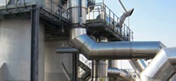

|
|
|
| |

|
|
|
Essemar was established in 2004 following the joint venture of Esseco Group with Marchi Industriale.
Essemar produces and sells sulphuric acid and oleum.
The company is based in San Martino di Trecate and owns the sulphuric acid production plant.
The output is 400 t./day and the plant has been running in line with the productionset goals since October 2006.
The state-of-the art technology on site complies with the quality and safety requirements expected by the shareholders and the authorities.
The plant is managed by Esseco, a subsidiary of Esseco Group.
The raw material supplying and the sales are managed by
Marchi Industriale.
Essemar has taken advantage of the following favourable conditions; hence its greater competitiveness:
• based in the Po valley, a strategic location from
the market and logistic viewpoint
• industrial synergy with Esseco for the electric energy
production
• synergy with Esseco Group for the exploitation of
sulphur, i.e. the raw material.
Chairman: Fabrizio Zenone
Managing Director: Ferruccio Marchi
Managing Director: Piero Nulli
Manager: Massimo Scarpelli
www.marchi-industriale.it
www.essecogroup.com
|
|
|
|
 |
|